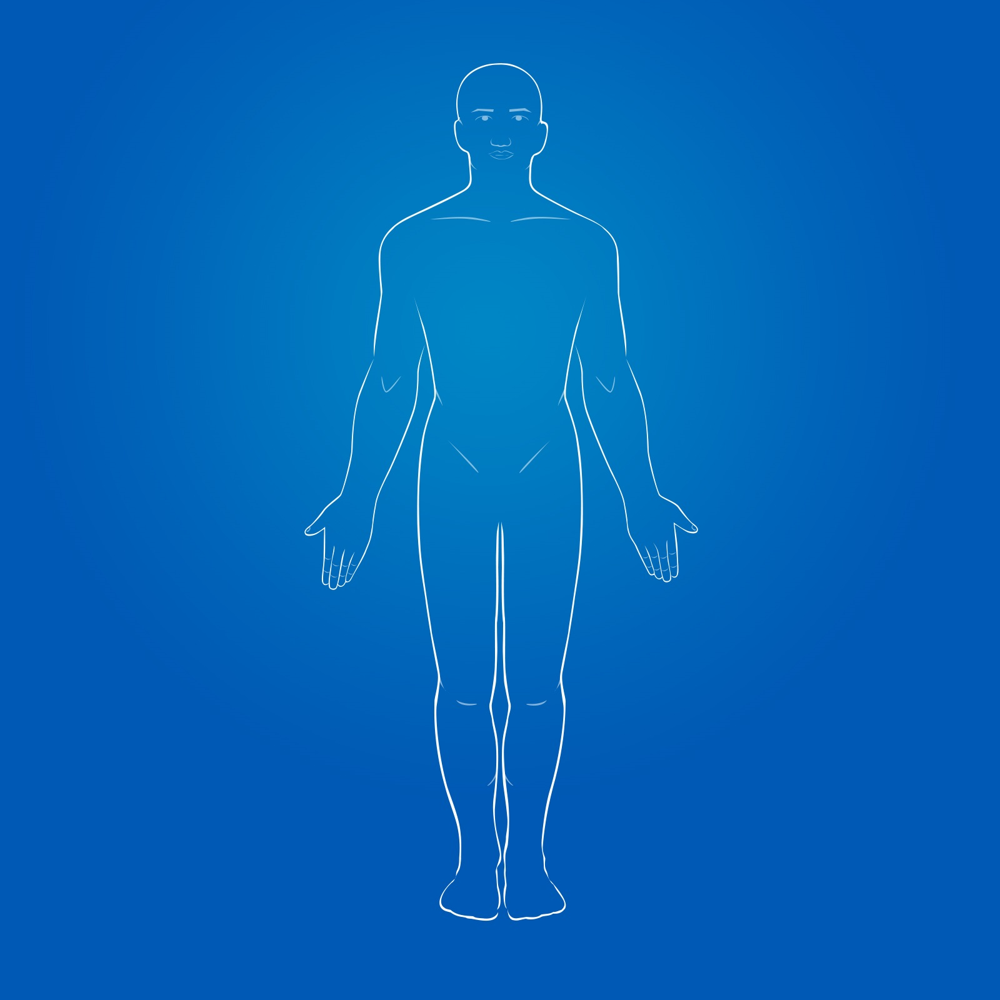
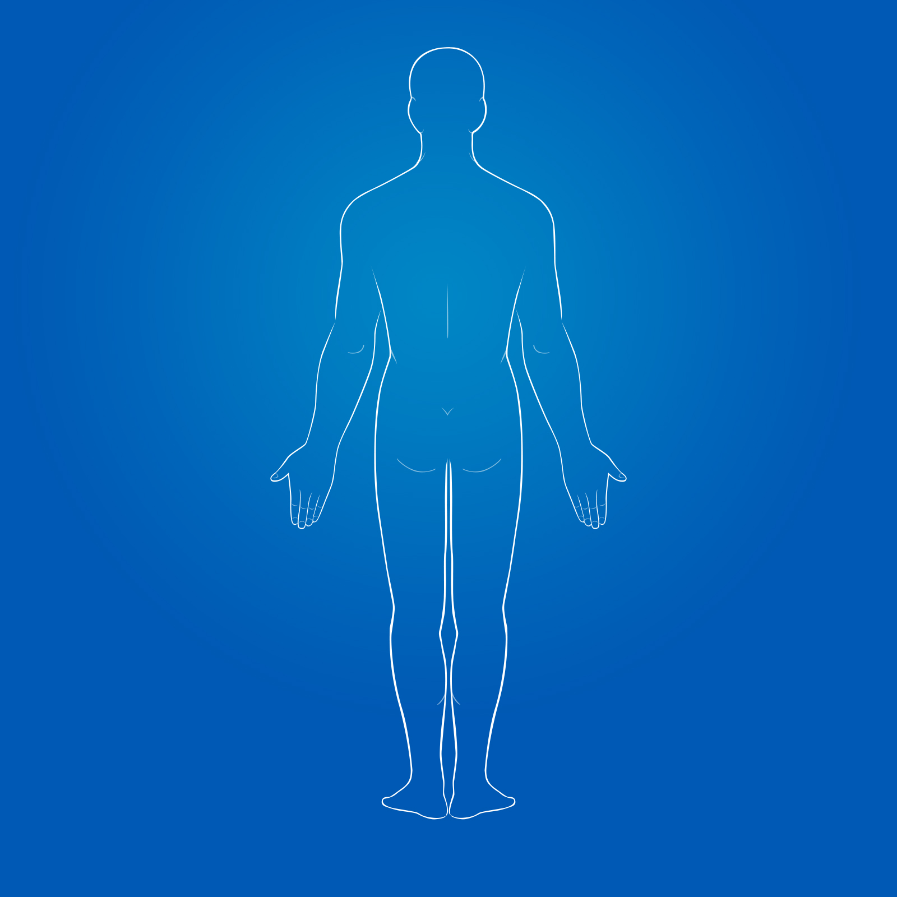
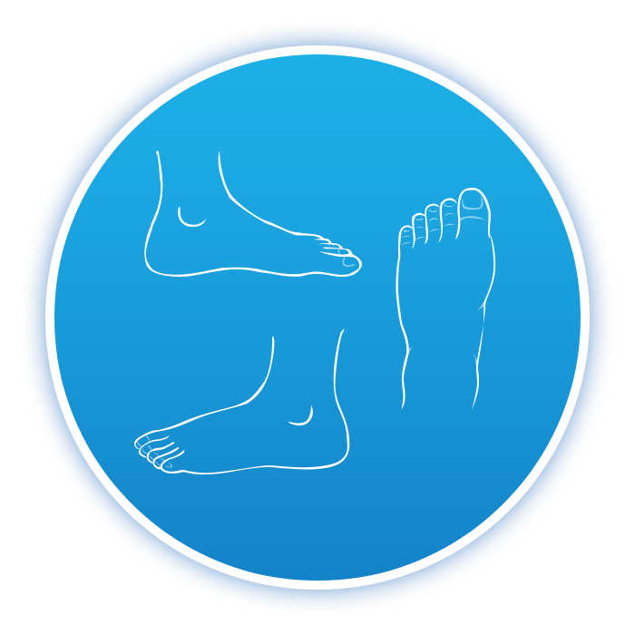

<div class="body-chart">
    <div class="body-chart-img-div">
		<button class="submit-btn btn btn-info" id="submitResults">提交</button>
		<div id="bodypart_name" class="bodypart_name_div"></div>
		<div id="BodyFrontPage" class="front-body-page"><a class="arrow"></a></div>
		<div id="BodyBackPage" class="back-body-page"><a class="arrow"></a></div>
		<div class="hot_area front_body_div" id="front_body_div">
			<div class="bodychart-title white-title">人体图-正面</div>
			
			<!-- <div id="front_left_foot_hover" class="front_left_foot_hover left_foot_hover"></div> -->
			<!-- <div id="front_right_foot_hover" class="front_right_foot_hover right_foot_hover"></div> -->
			<!-- <div id="front_right_hand_hover" class="front_right_hand_hover right_hand_hover"></div> -->
			<!-- <div id="front_left_hand_hover" class="front_left_hand_hover left_hand_hover"></div> -->
		</div>
		<div class="hot_area back_body_div" id="back_body_div">
			<div class="bodychart-title white-title">人体图-背面</div>
			
			<!-- <div id="back_left_foot_hover" class="back_left_foot_hover left_foot_hover"></div> -->
			<!-- <div id="back_right_foot_hover" class="back_right_foot_hover right_foot_hover"></div> -->
			<!-- <div id="back_right_hand_hover" class="back_right_hand_hover right_hand_hover"></div> -->
			<!-- <div id="back_left_hand_hover" class="back_left_hand_hover left_hand_hover"></div> -->
		</div>
	</div>
	<div class="container">
		<div class="modal fade BC_modal" id="BC_Modal" role="dialog" style="display:none">
			<div class="modal-dialog" style="width:500px" >
				<div class="modal-content">
					<div class="modal-header">
						<h5 class="modal-title blue-title" id="modal_bodyChart_title"></h5>
					</div>
					<div class="modal-body" style="padding:0">
						<div id="modal_bodypart_name" class=" modal_bodypart_name_div"></div>
						<div class="modal_hot_area left_hand_detail" id="left_hand_div">
							<!-- <div class="bodychart-title blue-title">人体图-左手</div> -->
							
						</div>
						<div class="modal_hot_area right_hand_detail" id="right_hand_div">
							<!-- <div class="bodychart-title blue-title">人体图-右手</div> -->
							
						</div>
						<div class="modal_hot_area left_foot_detail" id="left_foot_div">
							<!-- <div class="bodychart-title blue-title">人体图-左脚</div> -->
							
						</div>
						<div class="modal_hot_area right_foot_detail" id="right_foot_div">
							<!-- <div class="bodychart-title blue-title">人体图-右脚</div> -->
							
						</div>
						<div class="btn-modal-group">
							<button id="BC_modal_ok" class="btn btn-primary btn_modal_ok">确定</button>
							<!-- <button id="BC_modal_cancel" class="btn btn-primary btn_modal_cancel">取消</button> -->
						</div>
					</div>
				</div>
			</div>
		</div>
	</div>
    <map name="right_hand" id="right_hand" class="modal_bodychart_map">
        <area shape="circle" class="modal_joint" coords="227,332,20" href="#" partid="130" title="右小指近端指间关节" />
        <area shape="circle" class="modal_joint" coords="199,299,22" href="#" partid="131" title="右小指远端指间关节" />
        <area shape="circle" class="modal_joint" coords="269,232,24" href="#" partid="129" title="右无名指远端指间关节（环指）" />
        <area shape="circle" class="modal_joint" coords="283,279,24" href="#" partid="128" title="右无名指近端指间关节（环指）" />
        <area shape="circle" class="modal_joint" coords="339,204,27" href="#" partid="127" title="右中指远端指间关节" />
        <area shape="circle" class="modal_joint" coords="345,258,27" href="#" partid="126" title="右中指近端指间关节" />
        <area shape="circle" class="modal_joint" coords="426,238,24" href="#" partid="125" title="右示指远端指间关节（食指）" />
        <area shape="circle" class="modal_joint" coords="417,284,24" href="#" partid="124" title="右示指近端指间关节（食指）" />
        <area shape="poly" class="modal_joint" coords="422,203,440,208,454,216,458,228,459,249,459,266,457,283,453,297,442,302,431,305,416,302,404,298,389,286,385,274,391,253,395,235,402,211,411,204" href="#" partID="39" title="右示指指间关节（食指）"/>
        <area shape="poly" class="modal_joint" coords="315,179,330,170,347,171,357,175,367,187,372,203,374,225,374,246,374,272,366,282,351,285,333,286,320,280,311,260,310,212" href="#" partID="40" title="右中指指间关节"/>
        <area shape="poly" class="modal_joint" coords="257,201,272,201,287,205,293,216,297,230,302,249,309,270,309,284,302,290,293,296,278,299,264,300,251,293,246,269,241,236,241,213" href="#" partID="41" title="右无名指指间关节（环指）"/>
        <area shape="poly" class="modal_joint" coords="196,274,182,280,174,292,174,309,177,324,187,330,196,340,203,348,219,353,235,343,249,329,250,319,247,306,234,289,215,273" href="#" partID="42" title="右小指指间关节"/>
        <area shape="circle" class="modal_joint" coords="507,412,26" href="#" partID="38" title="右拇指指间关节"/>
        <area shape="poly" class="modal_joint" coords="452,409,473,421,495,445,506,469,499,486,486,499,463,512,443,500,431,471,423,434,434,414" href="#" partID="12" title="右拇指掌指关节"/>
        <area shape="circle" class="modal_joint" coords="401,333,30" href="#" partID="13" title="右示指掌指关节（食指）"/>
        <area shape="circle" class="modal_joint" coords="349,314,22" href="#" partID="14" title="右中指掌指关节"/>
        <area shape="circle" class="modal_joint" coords="298,324,22" href="#" partID="15" title="右无名指掌指关节（环指）"/>
        <area shape="circle" class="modal_joint" coords="255,364,22" href="#" partid="16" title="右小指掌指关节" />
        <area shape="poly" class="modal_joint" coords="354,354,323,356,283,385,248,407,238,416,244,443,249,472,257,504,272,531,299,538,328,542,372,539,418,529,439,516,417,427,422,396,389,372" href="#" partID="102" title="右手掌骨间关节（手掌部）"/>
    </map>
	<map name="body_back" id="body_back">
		<area shape="circle" class="joint" coords="732,208,33" href="#" partID="92" title="左耳廓" />
		<area shape="circle" class="joint" coords="854,206,33" href="#" partID="93" title="右耳廓" />
		<area shape="poly" class="joint" coords="796,238,809,246,812,278,813,330,814,421,814,541,814,596,808,668,808,695,799,708,793,708,784,696,783,668,779,595,779,543,780,421,781,332,780,278,783,247" href="#" partID="90" title="脊柱" />
		<area shape="circle" class="joint" coords="651,372,42" href="#" partID="80" title="左肩关节" />
		<area shape="circle" class="joint" coords="942,375,42" href="#" partID="81" title="右肩关节" />
		<area shape="circle" class="joint" coords="627,608,42" href="#" partID="68" title="左肘关节" />
		<area shape="circle" class="joint" coords="971,610,42" href="#" partID="69" title="右肘关节" />
		<area shape="circle" class="joint" coords="577,787,28" href="#" partID="21" title="左腕关节" />
		<area shape="circle" class="joint" coords="1026,790,28" href="#" partID="22" title="右腕关节" />
		<area shape="poly" class="joint" coords="819,704,831,707,845,703,856,695,863,682,862,664,857,656,851,647,840,635,830,627,821,625,814,627,811,636,808,649,808,666,808,680,810,691,811,698" href="#" partID="89" title="右肾区（右肋脊角）" />
		<area shape="poly" class="joint" coords="729,668,730,682,734,691,744,699,755,704,767,706,777,703,780,696,783,683,784,663,783,648,782,636,778,627,769,626,759,632,751,638,743,647,735,655" href="#" partID="88" title="左肾区（左肋脊角）" />
		<area shape="circle" class="joint" coords="769,725,17" href="#" partID="82" title="左骶髂关节" />
		<area shape="circle" class="joint" coords="824,725,17" href="#" partID="85" title="右骶髂关节" />
		<area shape="circle" class="joint" coords="746,1091,45" href="#" partID="71" title="左膝关节" />
		<area shape="circle" class="joint" coords="855,1090,45" href="#" partID="72" title="右膝关节" />
		<area shape="circle" class="joint" coords="761,1370,28" href="#" partID="18" title="左踝关节" />
		<area shape="circle" class="joint" coords="840,1372,28" href="#" partID="19" title="右踝关节" />
		<area shape="circle" class="joint" coords="697,666,27" href="#" partID="77" title="左髋关节" />
		<area shape="circle" class="joint" coords="897,666,27" href="#" partID="78" title="右髋关节" />
		<area shape="circle" class="joint" coords="777,1442,22" href="#" partID="30" title="左足跟部" />
		<area shape="circle" class="joint" coords="821,1443,22" href="#" partID="31" title="右足跟部" />
		<area shape="poly" id="back_left_hand" class="joint" coords="617,741,636,751,614,799,605,861,586,907,566,944,535,955,506,936,507,874,482,872,471,854,496,814,532,781,552,724,571,727,557,787,548,808,584,820,597,791" partID="BLH" href="#" alt="左手" title="左手" />
		<area shape="poly" id="back_right_hand" class="joint" coords="1044,721,1064,783,1084,800,1106,825,1126,848,1122,870,1093,867,1094,888,1091,928,1069,956,1030,942,1007,900,1000,854,990,820,966,746,985,739,1013,816,1015,830,1059,814,1049,797,1027,727" partID="BRH" href="#" alt="右手" title="右手"/>
		<area shape="poly" id="back_right_foot" class="joint" coords="872,1365,876,1388,892,1405,922,1414,928,1434,908,1453,865,1459,816,1474,798,1461,798,1423,799,1375,822,1381,809,1432,812,1450,831,1452,847,1445,849,1411,862,1403,860,1370" alt="右脚" partID="BRF" href="#" title="右脚"/>
		<area shape="poly" id="back_left_foot" class="joint" coords="722,1361,722,1382,707,1400,678,1414,669,1434,684,1445,706,1456,734,1460,758,1467,776,1470,796,1464,800,1415,798,1374,780,1376,781,1403,783,1425,790,1437,785,1452,773,1456,750,1446,749,1415,734,1404,741,1389,741,1364" alt="左脚" partID="BLF" href="#" title="左脚"/>
	</map>
	<map name="body_front" id="body_front">
		<area shape="circle" class="joint" coords="771,189,19" href="#" partID="95" title="右眼" alt="右眼"/>
		<area shape="circle" class="joint" coords="830,190,19" href="#" partID="94" title="左眼" alt="左眼"/>
		<area shape="poly" class="joint" coords="742,192,752,210,744,238,728,242,708,216,715,192" href="javascript:void(0)" partID="93" title="右耳廓" alt="右耳廓"/>
		<area shape="poly" class="joint" coords="854,242,871,246,891,218,891,196,877,188,860,195,850,218" href="javascript:void(0)" partID="92" title="左耳廓" alt="左耳廓"/>
		<area shape="poly" class="joint" coords="802,289,830,281,848,262,850,243,828,250,802,257,773,251,749,239,756,264,773,281" href="javascript:void(0)" partID="91" title="下颌部" alt="下颌部"/>
		<area shape="poly" class="joint" coords="606,363,626,341,651,329,677,351,695,379,687,411,658,422,634,424,607,410,602,387" href="javascript:void(0)" partID="81" title="右肩关节" alt="右肩关节" />
		<area shape="poly" class="joint" coords="979,353,948,336,925,356,907,378,911,407,928,427,972,435,998,415,999,382" href="javascript:void(0)" partID="80" title="左肩关节" alt="左肩关节" />
		<area shape="circle" class="joint" coords="909,349,19" href="javascript:void(0)" partID="84" title="左肩锁关节" alt="左肩锁关节"/>
		<area shape="circle" class="joint" coords="696,346,19" href="javascript:void(0)" partID="87" title="右肩锁关节" alt="右肩锁关节"/>
		<area shape="circle" class="joint" coords="824,351,19" href="javascript:void(0)" partID="83" title="左胸锁关节" alt="左胸锁关节"/>
		<area shape="circle" class="joint" coords="777,351,19" href="javascript:void(0)" partID="86" title="右胸锁关节" alt="右胸锁关节"/>
		<area shape="circle" class="joint" coords="968,590,40" href="#" partID="68" title="左肘关节" alt="左肘关节"/>
		<area shape="circle" class="joint" coords="631,585,40" href="#" partID="69" title="右肘关节" alt="右肘关节"/>
		<area shape="circle" class="joint" coords="1025,793,34" href="#" partID="21" title="左腕关节" alt="左腕关节"/>
		<area shape="circle" class="joint" coords="575,794,34" href="#" partID="22" title="右腕关节" alt="右腕关节"/>
		<area shape="circle" class="joint" coords="699,694,35" href="#" partID="78" title="右髋关节" alt="右髋关节"/>
		<area shape="circle" class="joint" coords="901,697,35" href="#" partID="77" title="左髋关节" alt="左髋关节"/>
		<area shape="circle" class="joint" coords="746,1089,48" href="#" partID="72" title="右膝关节" alt="右膝关节"/>
		<area shape="circle" class="joint" coords="855,1092,48" href="#" partID="71" title="左膝关节" alt="左膝关节"/>
		<area shape="circle" class="joint" coords="839,1366,35" href="#" partID="18" title="左踝关节" alt="左踝关节"/>
		<area shape="circle" class="joint" coords="767,1366,35" href="#" partID="19" title="右踝关节" alt=" 右踝关节"/>
		<area shape="poly" id="front_right_foot" class="joint" coords="702,1472,740,1487,771,1489,803,1475,804,1446,803,1408,804,1350,802,1306,778,1304,793,1369,783,1405,741,1399,742,1307,722,1314,700,1411,688,1437" partID="FRF" href="#" alt="右脚" title="右脚"/>
		<area shape="poly" id="front_left_foot" class="joint" coords="861,1311,881,1312,882,1357,889,1390,905,1418,921,1446,910,1471,874,1484,838,1486,802,1476,803,1409,802,1306,817,1306,825,1411,863,1408" partID="FLF" href="#" alt="左脚" title="左脚"/>
		<area shape="poly" id="front_right_hand" class="joint" coords="555,716,575,719,560,771,543,808,538,820,586,829,599,780,620,740,633,746,618,783,609,808,601,865,569,939,535,954,503,943,504,872,482,867,477,845,532,786"  partID="FRH" href="#" alt="右手" title="右手"/>
		<area shape="poly" id="front_left_hand" class="joint" coords="1065,786,1099,803,1117,832,1125,850,1112,864,1091,861,1094,894,1091,928,1073,945,1044,933,1016,896,993,850,985,807,966,747,987,738,1013,840,1066,815,1044,798,1025,720,1045,709" partID="FLH" href="#" alt="左手" title="左手"/>
	</map>
    <map name="left_hand" id="left_hand" class="modal_joint">
        <area shape="circle" class="modal_joint" coords="474,332,20" href="#" partid="122" title="左小指近端指间关节" />
        <area shape="circle" class="modal_joint" coords="501,300,21" href="#" partid="123" title="左小指远端指间关节" />
        <area shape="circle" class="modal_joint" coords="432,229,25" href="#" partid="121" title="左无名指远端指间关节" />
        <area shape="circle" class="modal_joint" coords="417,278,25" href="#" partid="120" title="左无名指近端指间关节" />
        <area shape="circle" class="modal_joint" coords="355,257,25" href="#" partid="118" title="左中指近端指间关节" />
        <area shape="circle" class="modal_joint" coords="362,202,25" href="#" partid="119" title="左中指远端指间关节" />
        <area shape="circle" class="modal_joint" coords="274,237,25" href="#" partid="117" title="左示指远端指间关节（食指）" />
        <area shape="circle" class="modal_joint" coords="282,284,25" href="#" partid="116" title="左示指近端指间关节（食指）" />
        <area shape="poly" class="modal_joint" coords="281,371,314,365,344,358,381,363,409,379,432,395,456,410,442,467,433,503,422,523,406,533,377,539,346,540,303,535,268,522,279,471,277,429,263,402,269,381,271,373" href="#" partID="101" title="左手掌骨间关节（手掌部）"/>
        <area shape="poly" class="modal_joint" coords="229,414,219,427,209,438,200,447,198,451,196,463,201,479,209,490,220,497,234,500,250,499,259,491,271,482,276,469,275,436,268,424,257,416,241,411" href="#" partID="7" title="左拇指掌指关节"/>
        <area shape="circle" class="modal_joint" coords="194,412,27" href="#" partID="33" title="左拇指指间关节"/>
        <area shape="circle" class="modal_joint" coords="298,329,27" href="#" partID="8" title="左示指掌指关节（食指）"/>
        <area shape="poly" class="modal_joint" coords="269,309,279,307,292,303,305,299,313,294,314,286,311,268,306,248,303,232,300,220,295,210,283,208,269,209,258,212,247,220,244,234,242,250,244,267,245,280,248,291,254,304" href="#" partID="34" title="左示指指间关节（食指）"/>
        <area shape="circle" class="modal_joint" coords="352,317,25" href="#" partID="9" title="左中指掌指关节"/>
        <area shape="poly" class="modal_joint" coords="343,186,360,180,372,181,382,187,388,198,389,213,389,231,388,242,387,260,382,275,370,283,354,285,341,284,328,276,322,253,324,224,333,197" href="#" partID="35" title="左中指指间关节"/>
        <area shape="circle" class="modal_joint" coords="402,326,25" href="#" partID="10" title="左无名指掌指关节（环指）"/>
        <area shape="poly" class="modal_joint" coords="420,206,439,205,451,210,458,222,459,233,458,249,453,269,450,284,440,301,429,305,411,302,395,294,390,284,392,264,400,236,411,213" href="#" partID="36" title="左无名指指间关节（环指）"/>
        <area shape="circle" class="modal_joint" coords="445,362,22" href="#" partID="11" title="左小指掌指关节"/>
        <area shape="poly" class="modal_joint" coords="487,280,510,280,521,289,527,300,523,314,517,324,509,336,500,346,489,355,479,358,462,349,452,337,447,324,451,314,465,296" href="#" partID="37" title="左小指指间关节"/>
    </map>
	<map name="right_foot" id="right_foot" class="modal_joint">
		<area shape="poly" class="modal_joint" coords="161,227,193,227,193,250,159,251" href="#" partID="49" title="右第一趾间关节"/>
		<area shape="poly" class="modal_joint" coords="161,254,177,251,192,253,196,263,191,277,171,283,154,272" href="#" partID="3" title="右第一跖趾关节"/>
		<area shape="poly" class="modal_joint" coords="196,231,214,231,212,253,196,253" href="#" partID="50" title="右第二趾间关节"/>
		<area shape="circle" class="modal_joint" coords="205,263,9" href="#" partID="57" title="右第二跖趾关节"/>
		<area shape="circle" class="modal_joint" coords="222,267,8" href="#" partID="60" title="右第三跖趾关节"/>
		<area shape="circle" class="modal_joint" coords="237,273,7" href="#" partID="63" title="右第四跖趾关节"/>
		<area shape="poly" class="modal_joint" coords="215,236,229,240,229,260,215,257" href="#" partID="51" title="右第三趾间关节"/>
		<area shape="poly" class="modal_joint" coords="230,243,244,247,243,268,230,265" href="#" partID="52" title="右第四趾间关节"/>
		<area shape="circle" class="modal_joint" coords="251,278,7" href="#" partID="66" title="右第五跖趾关节"/>
		<area shape="poly" class="modal_joint" coords="246,255,259,258,259,272,244,269" href="#" partID="53" title="右第五趾间关节"/>
		<area shape="poly" class="modal_joint" coords="261,295,198,278,154,289,162,336,170,398,255,400" href="#" partID="25" title="右足背部"/>
		<area shape="circle" class="modal_joint" coords="371,436,41" href="#" partID="99" title="右踝关节外侧"/>
		<area shape="poly" class="modal_joint" coords="419,223,443,259,404,282,369,277,368,237" href="#" partID="25" title="右足背部"/>
		<area shape="poly" class="modal_joint" coords="545,265,518,262,492,278,495,306,531,310,547,292" href="#" partID="31" title="右足跟部"/>
		<area shape="circle" class="modal_joint" coords="485,226,39" href="#" partID="98" title="右踝关节内侧"/>
		<area shape="poly" class="modal_joint" coords="311,470,354,479,367,498,352,529,313,525,306,495" href="#" partID="31" title="右足跟部"/>
		<area shape="poly" class="modal_joint" coords="437,438,481,445,490,472,480,495,438,492,408,480" href="#" partID="25" title="右足背部"/>
		<area shape="poly" class="modal_joint" coords="382,293,428,281,460,283,479,291,476,309,448,318,392,313" href="#" partID="114" title="右足底"/>
		<area shape="poly" class="modal_joint" coords="391,496,422,496,450,509,457,526,421,536,389,536,367,527,371,503" href="#" partID="114" title="右足底"/>
	</map>
	<map name="left_foot" id="left_foot" class="modal_modal_joint">
		<area shape="poly" class="modal_joint" coords="437,299,490,287,546,297,537,349,527,414,445,409,434,329" href="#" partID="24" title="左足背部"/>
		<area shape="circle" class="modal_joint" coords="214,226,37" href="#" partID="96" title="左踝关节内侧"/>
		<area shape="circle" class="modal_joint" coords="330,436,41" href="#" partID="97" title="左踝关节外侧"/>
		<area shape="circle" class="modal_joint" coords="245,464,33" href="#" partID="24" title="左足背部"/>
		<area shape="poly" class="modal_joint" coords="391,475,354,473,334,491,341,525,379,528,391,508" href="#" partID="30" title="左足跟部"/>
		<area shape="poly" class="modal_joint" coords="155,263,179,262,194,265,208,280,205,312,171,313,151,297" href="#" partID="30" title="左足跟部"/>
		<area shape="poly" class="modal_joint" coords="506,221,521,216,540,220,541,252,523,252,505,252" href="#" partID="44" title="左第一趾间关节"/>
		<area shape="poly" class="modal_joint" coords="505,256,524,253,542,254,546,278,523,280,504,276" href="#" partID="2" title="左第一跖趾关节"/>
		<area shape="poly" class="modal_joint" coords="485,233,495,228,504,231,504,251,494,254,487,252" href="#" partID="45" title="左第二趾间关节"/>
		<area shape="circle" class="modal_joint" coords="495,263,9" href="#" partID="56" title="左第二跖趾关节"/>
		<area shape="circle" class="modal_joint" coords="479,266,8" href="#" partID="59" title="左第三跖趾关节"/>
		<area shape="circle" class="modal_joint" coords="463,272,7" href="#" partID="62" title="左第四跖趾关节"/>
		<area shape="circle" class="modal_joint" coords="449,277,7" href="#" partID="65" title="左第五跖趾关节"/>
		<area shape="poly" class="modal_joint" coords="470,236,485,234,486,256,471,257" href="#" partID="46" title="左第三趾间关节"/>
		<area shape="poly" class="modal_joint" coords="455,246,468,243,470,261,457,263" href="#" partID="47" title="左第四趾间关节"/>
		<area shape="poly" class="modal_joint" coords="439,256,455,253,455,267,440,270" href="#" partID="48" title="左第五趾间关节"/>
		<area shape="circle" class="modal_joint" coords="298,248,33" href="#" partID="24" title="左足背部"/>
		<area shape="poly" class="modal_joint" coords="234,503,280,491,312,491,332,510,333,530,238,535" partID="113" title="左足底"/>
		<area shape="poly" class="modal_joint" coords="234,277,255,276,315,290,317,310,223,318,219,294" partID="113" title="左足底"/>
	</map>
</div>
<script type='text/javascript' src='js/jquery.min.js'></script>
<script type='text/javascript' src='js/bootstrap.min.js'></script>
<script type="text/javascript" src="js/jquery.imagemapster.js"></script>
<script type='text/javascript' src='js/body-chart.js'></script>
<link rel="stylesheet" href='css/bootstrap.min.css'/>
<link rel="stylesheet" href='css/body-chart.css'/>